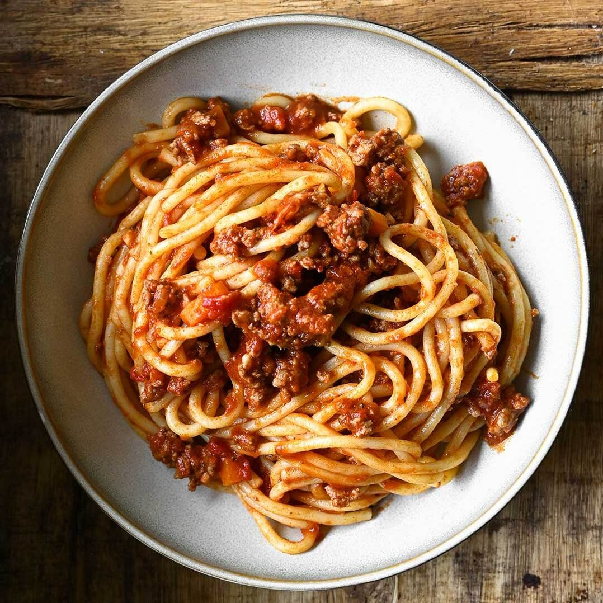

Ingredients:
Spaghetti noodles Olive oil Onion, finely chopped Garlic, minced Crushed tomatoes Dried oregano Dried basil Red pepper flakes (optional, for heat) Salt and black pepper Fresh basil or parsley for garnish Grated Parmesan cheese (optional)
Instructions:
Cook the spaghetti noodles according to package instructions until al dente. Drain and set aside. In a skillet, heat olive oil over medium heat. Add chopped onion and cook until softened. Add minced garlic and cook for an additional 1-2 minutes until fragrant. Pour in crushed tomatoes, oregano, basil, red pepper flakes (if using), salt, and black pepper. Stir to combine. Simmer the sauce for 15-20 minutes. Add the cooked spaghetti to the skillet with the tomato sauce. Toss to coat the noodles evenly with the sauce. Plate the spaghetti, garnish with fresh basil or parsley, and sprinkle with grated Parmesan cheese if desired.
Spaghetti
Jackob
Homemade spaghetti recipe. Elevate your dining experience with al dente noodles coated in a rich and flavorful tomato sauce. Quick to prepare and bursting with classic Italian taste, this spaghetti recipe is perfect for a comforting meal any day of the week.
Spaghetti noodles Olive oil Onion, finely chopped Garlic, minced Crushed tomatoes Dried oregano Dried basil Red pepper flakes (optional, for heat) Salt and black pepper Fresh basil or parsley for garnish Grated Parmesan cheese (optional)
Instructions:
Cook the spaghetti noodles according to package instructions until al dente. Drain and set aside. In a skillet, heat olive oil over medium heat. Add chopped onion and cook until softened. Add minced garlic and cook for an additional 1-2 minutes until fragrant. Pour in crushed tomatoes, oregano, basil, red pepper flakes (if using), salt, and black pepper. Stir to combine. Simmer the sauce for 15-20 minutes. Add the cooked spaghetti to the skillet with the tomato sauce. Toss to coat the noodles evenly with the sauce. Plate the spaghetti, garnish with fresh basil or parsley, and sprinkle with grated Parmesan cheese if desired.